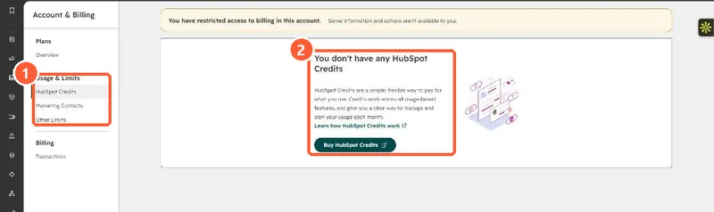

Short answer
Account name, Account & Billing > Usage & Limits > HubSpot Credits shows your monthly allocation, current and historical usage, and a breakdown by feature. Super Admins and Billing Admins can set a Maximum monthly credits limit for the account and a lower limit per feature. When the account limit is hit, features that use credits pause until the next reset. HubSpot emails admins at 75%, 85% and 90% usage.
1. The usage page
My demo portal has no credits and my login has restricted billing access, so the page shows the empty state. In an account with credits, the same tab shows the allocation, usage history and per-feature table.


2. Two kinds of limit
- Account limit: the overall monthly ceiling across all tools.
- Feature limit: a cap for one feature. It cannot be higher than the account limit.
3. Before switching on an agent
Credit-based features often run once per record or per email. Check the feature's settings for a percentage or volume control, and set a feature limit first. For one example, see nurture agent credits.